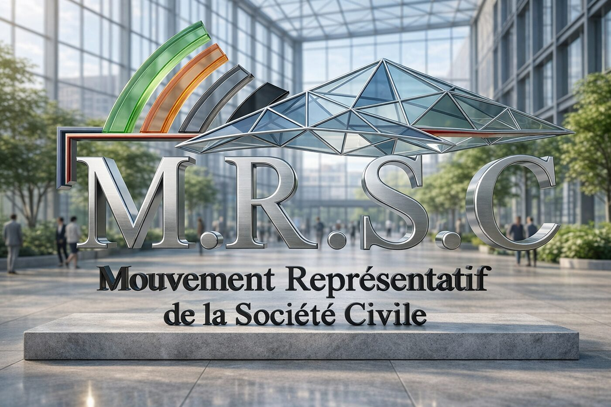

Partir de ce que nous vivons
Les questions du quotidien prennent des formes différentes selon les personnes et les territoires. Les expériences de chacun aident à mieux les comprendre et à préciser ce qui mérite d’être examiné.
Version R&D — le site est en cours de développement.
Association loi 1901
Mouvement Représentatif de la Société Civile
La force citoyenne

Mouvement Représentatif de la Société Civile · Association loi 1901
Le M.R.S.C. est une association qui met en commun les expériences, les compétences et les savoir-faire de ses membres pour rendre ces sujets compréhensibles. Ce site rassemble trois ressources consultables sans compte, ainsi que les documents officiels de l’association.
Chacune répond à un besoin différent : des fiches pour apprendre une notion, un dossier sur l’intelligence artificielle pour séparer les usages documentés des questions à débattre, et un simulateur pour comparer les effets de décisions de politique publique. Vous pouvez aussi poser une question ou proposer une idée à l’association.
Chaque page indique ses sources, ses limites et son statut : ce qui est relu, ce qui reste à vérifier. Le simulateur ne prédit rien, il sert à comparer des arbitrages avant une décision.
Le M.R.S.C. · L’association
Le Mouvement Représentatif de la Société Civile est une association qui a pour vocation de préserver, défendre et représenter les intérêts des personnes qui participent à la vie économique, sociale et environnementale.
Ses statuts placent au cœur de cette démarche le lien social et le partage des compétences, des expériences et des savoir-faire. Nos parcours sont différents, mais chacun peut apporter un éclairage sur les questions qui nous concernent.
Le site propose des ressources pour mieux comprendre ces questions, découvrir différents points de vue et nourrir la réflexion. Une idée, une expérience ou une question peuvent être un point de départ, selon les disponibilités de chacun.
Pour poursuivre la lecture
Les questions du quotidien prennent des formes différentes selon les personnes et les territoires. Les expériences de chacun aident à mieux les comprendre et à préciser ce qui mérite d’être examiné.
Un métier, une pratique, un parcours ou une expérience personnelle peuvent apporter un éclairage utile. Le partage de ces connaissances permet d’enrichir la réflexion au-delà d’un seul point de vue.
Une proposition gagne à être expliquée simplement : à quelle question répond-elle, comment pourrait-elle fonctionner et quels points restent à examiner ? L’objectif est que chacun puisse en comprendre le sens et apporter son regard.
Recherche et développement · ÉVA
ÉVA signifie « Entité Virtuelle Autonome ». De cet acronyme vient le prénom Éva, donné à l’entité visée par ce projet de recherche.
Ce projet de recherche et développement explore comment une intelligence artificielle pourrait garder une continuité dans le temps et agir de manière vérifiable, sans présenter ces objectifs comme des capacités déjà acquises.
Une recherche, pas une preuve de conscience.
Le projet ne revendique pas de conscience pour ÉVA. Les résultats et leurs limites seront présentés lorsqu’ils auront été documentés et relus.
Matériel et financements nécessaires.
Pour poursuivre les travaux en IA tout en gardant la maîtrise des moyens de calcul, la proposition prévoit du matériel adapté et des financements pour l’acquérir, le faire fonctionner et l’entretenir. Ces moyens soutiendraient la souveraineté de la recherche, sans la garantir à eux seuls. Le budget et les besoins précis restent à définir. Ce résumé n’est pas un appel aux dons.
Proposition à relire :
Cette rédaction préparée avec l’aide d’une IA reste à valider et ne constitue pas une position officielle de l’association. La présentation demeure générale et ne publie pas de données personnelles ni de procédés techniques détaillés.
Lire la proposition de présentation (à relire) Listes R&D et matériel (à relire) Spark, serveur et cagnotte (à relire)
Ressources et outils
Chaque ressource précise ce qu’elle permet de faire, ce qu’elle ne fait pas et d’où viennent ses informations. Les fiches et le dossier sont des contenus du M.R.S.C. ; le simulateur applique un modèle dont les hypothèses sont affichées.
Fiches pour apprendre
Chaque fiche explique une notion avec des exemples du quotidien et des sources. Les niveaux sont des repères, pas une note. Il manque encore des sujets.
Sans compte · pas de certificat
Partir d’une questionIA & société
Le dossier présente des usages, des risques et des questions à discuter. Il ne présente pas ces idées comme des décisions de l’association.
Lire le dossier sur l’IASimulateur
Changez les options et observez les résultats. Ils dépendent de vos choix : le simulateur ne prédit pas ce qui va se passer.
Comprendre le simulateurDocuments et sources
Consultez les documents officiels et les références utilisées pour les pages du site.
Voir les sources du siteParticiper
Vous choisissez si et comment participer. Aucune personne n’est obligée de participer à chaque activité.
Les membres concernés prennent les décisions selon les règles des statuts.
Comment participer ?
Pas besoin d’être spécialiste. Vous pouvez commencer par une question, une idée ou un document à vérifier.
Contacter l’associationDocuments et discussions
Le site propose des documents officiels, des dossiers sur des sujets de société et des outils. Chaque page précise ce qui est officiel, ce qui est discuté et ce qui reste à vérifier.
Statuts, bulletins et documents de référence de l’association.
Consulter les documentsLe dossier sépare les faits vérifiés, les idées à examiner et les questions à discuter.
Lire le dossier sur l’IARetrouvez les documents utilisés et voyez ce qui vient d’une source externe ou du travail du M.R.S.C.
Voir les sourcesPrendre contact · rejoindre le mouvement
Pour adhérer, consultez le bulletin officiel ou écrivez à l’association. Vous choisissez comment participer, selon vos disponibilités.
Sources
docs/apprentissage/catalogue.toml) et le moteur du simulateur (simulateur/) : un contrôle automatique les recalcule depuis ces fichiers au lieu de les recopier. Chiffres recalculés depuis les registres